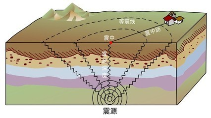
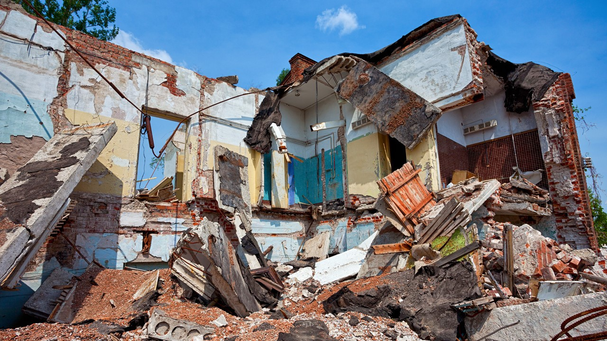
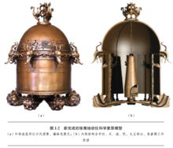

地球表层的岩石圈称作地壳。地壳岩层受力后快速破裂错动引起地表振动或破坏就叫地震。

地震开始发生的地点称为震源，震源正上方的地面称为震中。破坏性地震的地面振动最烈处称为极震区，极震区往往也就是震中所在的地区。

地震常常造成严重人员伤亡，能引起火灾、水灾、有毒气体泄漏、细菌及放射性物质扩散，还可能造成海啸、滑坡、崩塌、地裂缝等次生灾害。

早在公元132年，东汉科学家张衡发明了世界上第一架地震仪器——地动仪，并在实际应用中，得到了验证。遗憾的是，地动仪实物和图样失传，只留下了文字记载，实物逐渐成为了千古之谜。